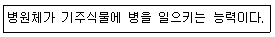
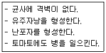
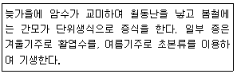
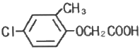

식물보호산업기사 (2019-03-03 기출문제)
1과목: 식물병리학
1. 다음에 해당하는 용어로 옳은 것은?

- 특이성
- 감수성
- 병원성
- 기생성
(정답률: 87%)

2. 벼 흰잎마름병을 일으키는 병원체는?
- 세균
- 곰팡이
- 바이러스
- 파이토플라스마
(정답률: 82%)
3. 고추 탄저병이 발생하여 피해가 가장 큰 환경은?
- 고온 다습
- 저온 건조
- 고온 건조
- 저온 다습
(정답률: 86%)
4. 강풍 후에 발생이 가장 많은 식물병은?
- 오이 역병
- 가지 풋마름병
- 벼 흰잎마름병
- 수박 덩굴쪼김병
(정답률: 78%)
5. 오이 모자이크병을 매개하는 곤충은?
- 선충
- 애멸구
- 진딧물
- 끝동매미충
(정답률: 87%)
6. 대추나무 빗자루병 방제 방법으로 옳지 않은 것은?
- 마름무늬매미충을 방제한다.
- 대추나무를 밀식하지 않는다.
- 증식용 분근은 건전한 나무에서 얻는다.
- 스트렙토마이신으로 나무주사를 실시한다.
(정답률: 77%)
7. 다음은 어느 병원균에 대한 설명인가?

- 감자 역병균
- 감자 무름병균
- 감자 Y바이러스
- 감자 더뎅이병균
(정답률: 78%)
8. 식물병의 생태학적 방제 방법에 해당하는 것은?
- 토양 소독
- 살균제 살포
- 미생물 이용
- 재식밀도 조절
(정답률: 67%)
9. 고구마 검은무늬병 방제 방법으로 가장 효과적인 것은?
- 씨고구마를 노천매장한다.
- 씨고구마를 냉동고에 저장한다.
- 씨고구마를 큐어링 처리한 후에 저장한다.
- 씨고구마에 소독제를 살포한 후에 저장한다.
(정답률: 86%)
10. 보리 겉깜부기병 방제 방법으로 가장 효과적인 것은?
- 윤작
- 종자 소독
- 밀식 재배
- 항생제 사용
(정답률: 85%)
11. 출수 후 씨알에 발생하며 화기감염을 하는 식물병은?
- 밀 줄기녹병
- 오이 노균병
- 맥류 흰가루병
- 보리 겉깜부기병
(정답률: 81%)
12. 식물병을 일으키는 세균에 대한 설명으로 옳지 않은 것은?
- 단세포이다.
- 균사가 있다.
- 세포벽이 있다.
- 이분법으로 증식한다.
(정답률: 64%)
13. 식물병의 생물학적 진단방법으로 옳지 않은 것은?
- ELISA법
- 괴경지표법
- 즙액접종에 의한 진단
- 충체 내 주사법에 의한 진단
(정답률: 67%)
14. 박테리오파지(bacteriophage)의 의미로 옳은 것은?
- 바이러스에 기생하는 세균
- 세균에 기생하는 바이러스
- 바이러스를 제거하는 세균
- 세균을 제거하는 바이러스
(정답률: 74%)
15. 파이토플라스마에 의한 식물병의 전형적인 병징으로 거리가 먼 것은?
- 위축
- 꽃의 엽화
- 총생
- 비대
(정답률: 74%)
16. 바이로이드에 의해 발생하는 식물병은?
- 벼 오갈병
- 감자 걀쭉병
- 콩 모자이크병
- 뽕나무 오갈병
(정답률: 82%)
17. 감자 Y바이러스에 대한 설명으로 옳지 않은 것은?
- 진딧물에 의해 매개된다.
- 풍차형 봉입체를 형성한다.
- 감염된 식물의 세포질 내에 흩어져 존재한다.
- 감자 품종에 따라 병징이 다르지 않고 모두 유사하다.
(정답률: 82%)
18. 식물병원균의 생태형(race) 존재 여부를 인식할 수 있는 방법으로 가장 적합한 것은?
- 병원균의 형태적 변이
- 병원균의 병원성 차이
- 병원균의 배양적 성질 차이
- 병원균의 화학적 구성분 차이
(정답률: 70%)
19. 벼 도열병을 일으키는 병원체는?
- 균류
- 세균
- 바이러스
- 파이토플라스마
(정답률: 68%)
20. 사과나무 축과병이 발생하는 주요 원인은?
- 칼륨 결핍
- 인산 결핍
- 붕소 결핍
- 석회 결핍
(정답률: 84%)
2과목: 농림해충학
21. 흡즙성 해충으로만 올바르게 나열한 것은?
- 벼멸구, 점박이응애
- 애풍뎅이, 화랑곡나방
- 목화진딧물, 담배거세미나방
- 조명나방, 톱다리개미허리노린재
(정답률: 70%)
22. 곤충의 체벽을 이루는 조직으로 탈피 시 대부분이 체내로 흡수되어 재활용되는 것은?
- 외표피
- 진피층
- 내원표피
- 외원표피
(정답률: 72%)
23. 해충이 가해하는 기주의 연결이 옳지 않은 것은?
- 파밤나방-벼
- 멸강나방-보리
- 담배나방-고추
- 복숭아혹진딧물-가지
(정답률: 59%)
24. 이화명나방에 대한 설명으로 옳지 않은 것은?
- 뒷날개는 흰색이다.
- 더듬이는 몽둥이 모양이다.
- 앞날개의 외연에는 검은점이 없다.
- 앞날개는 엷은 갈색을 띤 회색이다.
(정답률: 73%)
25. 지구상에서 곤충이 번성하게 된 이유로 가장 거리가 먼 것은?
- 공진화
- 짧은 세대
- 키틴질의 골격구조
- 낮은 유전적 상이성
(정답률: 70%)
26. 다음 설명에 해당되는 해충은?

- 점박이응애
- 온실가루이
- 끝동매미충
- 복숭아혹진딧물
(정답률: 68%)
27. 벼물바구미의 분류학적 위치는?
- 메뚜기목
- 노린재목
- 딱정벌레목
- 총채벌레목
(정답률: 51%)
28. 곤충의 휴면을 유발시키는 요인으로 가장 거리가 먼 것은?
- 천적
- 먹이
- 온도
- 일장 조건
(정답률: 74%)
29. 식물체의 뿌리, 줄기 또는 잎을 통하여 약제가 식물체 내에 들어가고, 해충이 약제가 흡수된 식물을 섭식하는 경우에 해충 체내로 약제 성분이 들어가 죽게 하는 살충제는?
- 유인제
- 훈증제
- 소화중독제
- 침투성 살충제
(정답률: 79%)
30. 가로수에 밴딩(banding)을 하여 해충을 방제하는 주요 대상은?
- 도둑나방
- 심식나방
- 잎말이나방
- 미국흰불나방
(정답률: 73%)
31. 세계에서 가장 많은 종이 기록되어 있어 많은 해충과 익충이 포함되어 있는 것은?
- 사마귀목
- 강도래목
- 딱정벌레목
- 흰개미목이목
(정답률: 88%)
32. 성충과 유충이 모두 기주를 직접 가해하는 것은?
- 도둑나방
- 큰검정풍뎅이
- 검거세미밤나방
- 아메리카잎굴파리
(정답률: 45%)
33. 곤충의 생식에 대한 설명으로 옳지 않은 것은?
- 양성색식 외에도 다양한 방법으로 생식한다.
- 암컷의 부속샘은 알을 코팅하는 기능이 있다.
- 정자는 암컷의 채내에서 오래 살아 있을 수 없다.
- 일반적으로 채내수정을 하지만 체외수정을 하는 경우도 있다.
(정답률: 84%)
34. 유약호르몬이나 탈피호르몬 등을 이용하는 농약계통은?
- 보조제
- 기피제
- 곤충성장저해제
- 신경계통저해제
(정답률: 67%)
35. 우리나라에서 월동하기 힘들고 동남아시아 및 중국으로부터 비래하여 발생하는 해충은?
- 벼멸구
- 애멸구
- 끝동매미충
- 번개매미충
(정답률: 77%)
36. 곤충의 가슴에 구성된 체절 수는?
- 2
- 3
- 6
- 11
(정답률: 75%)
37. 밤나무혹벌에 대한 설명으로 옳지 않은 것은?
- 유충으로 월동한다.
- 하나의 벌레혹에는 한 마리의 유충이 있다.
- 천적으로 남색긴꼬리좀벌과 큰다리남색좀벌 등이 있다.
- 내충성 품종을 사용한 것이 가장 효과적인 방제 방법이다.
(정답률: 64%)
38. 솔껍질깍지벌레에 대한 설명으로 옳지 않은 것은?
- 우리라나에서 곰솔의 피해가 가장 심하다.
- 가해 수종이 다양하여 대부분의 침엽수를 가해한다.
- 방제 방법으로 침투성 살충제 수간수입법이 이용되고 있다.
- 약충이 주로 줄기나 가지의 양료를 흡즙하여 가해한다.
(정답률: 57%)
39. 곤충의 소화계통 중에서 분해된 음식물의 영양분을 흡수라는 곳은?
- 중장
- 침샘
- 전장
- 후장
(정답률: 80%)
40. 진딧물 및 매미의 입틀 모양은?
- 씹기에 적합하다.
- 구멍 뚫기에 적합하다.
- 핥아 먹기에 적합하다.
- 찔러 빨아먹기에 적합하다.
(정답률: 81%)
3과목: 농약학
41. methyl bromide에 대한 설명으로 틀린 것은?
- 훈증제 제형에 속한다.
- 증기압이 높은 약제이다.
- 살충력이 강하고 폭발의 위험이 없다.
- 곤충의 입을 통하여 곤충체내에 침입하는 식독제이다.
(정답률: 61%)
42. 농약제형의 형태가 직접살포제로 사용되는 것은?
- 수화제
- 세립제
- 유제
- 액제
(정답률: 61%)
43. 다음 화합물 중 협력제(協力制)는?
- Pyrophylite
- Bentonite
- Alkylsulfonate
- Piperonyl butoxide
(정답률: 53%)
44. 농약의 독성을 표시할 때 사용하는 LD50의 의미는?
- 완전치사량
- 30% 이상 살아남은 양
- 60% 치사량
- 중위치사량
(정답률: 83%)
45. 농약에 의한 약해 발생 원인이 아닌 것은?
- 기준 약량 이상 살포
- 척박한 논에 제초제 사용
- 정지작업을 균일하게 한 후 농약 살포
- 농약의 중복 및 근접 살포
(정답률: 77%)
46. 살균제의 작용기작 중 호흡저해가 아닌 것은?
- SH 저해
- 전자 전달 저해
- 단백질 합성 저해
- 산화적 인산화 저해
(정답률: 68%)
47. 농약의 주성분에 의한 분류로 주로 제초제나 생장조정제로 이용되고 있는 농약은?
- 유기비소계
- 피레스로이드계
- 유황계
- 페녹시계
(정답률: 70%)
48. 접촉독, 소화중독으로 효과를 나타내는 유기인계 살충제로서 야생조류에 피해를 줄 수 있고 특히 꿀벌에 잔류독성이 강하여 사용시 주의하여야 하는 농약은?
- 페노뷰카브
- 에토펜프록스
- 클로로피리포스
- 아이소프로티올레인
(정답률: 60%)
49. 액체를 포유동물에 경구 투여한 고독성농약을 반수치사량[mg/kg체중]으로 나타낸 수치로서 옳은 것은?
- 20 미만
- 20~200 미만
- 200~2000 미만
- 2000 이상
(정답률: 75%)
50. 25% DDT유제(비중:1.0) 100mL를 0.⑤%의 살포액으로 만드는데 소요되는 물의 양은 몇 약 L인가?
- 5
- 25
- 50
- 100
(정답률: 58%)
51. 농약의 물리적 성질 중 습전성을 가장 잘 설명한 것은?
- 살포한 약액이 작물이나 해충의 표면에 잘 적시고 퍼지는 성질을 말한다.
- 약제와 물과의 친화도를 나타내는 성질을 말한다.
- 약제는 물에 가열했을 때 입자가 균일하게 부유, 분산 하는 성질을 말한다.
- 부착한 약제가 이슬이나 빗물에 씻겨 내려 가지 않고 식물체의 표면에 붙어 있는 성질을 말한다.
(정답률: 77%)
52. 수(水)불용성인 농약원제로써 제품을 만들려고 할 때 적당한 제조형태가 아닌 것은?
- 유제(乳劑)
- 수화제
- 액제
- 입제
(정답률: 48%)
53. 다음과 같은 화학구조를 가지는 제초제는?

- 2, 4-D
- EPN
- MCP
- TBA
(정답률: 56%)
54. 유기인계 살충제의 공통적 특징에 대한 설명으로 틀린 것은?
- 접촉제로 강력하게 작용하며 훈증작용도 하고 소화 중독작용도 크다.
- 식물체에 흡수침투되어 살충작용을 한다.
- 낮은 농도로도 큰 살충효과를 낸다.
- 사람이나 가축에 대한 독성이 없다.
(정답률: 76%)
55. 사과, 수박의 탄저병에 적용하는 벤지미다졸계살균제는?
- 베노밀
- 보스칼리드
- 비터타놀
- 빈클로졸린
(정답률: 75%)
56. 살포된 분제가 식물체 표면에 잘 달라붙게 하는 성질을 무엇이라 하는가?
- 안정성
- 분산성
- 비산성
- 부착성
(정답률: 86%)
57. 농약을 제조할 때 사용되는 가성소다(NaOH)에 대한 설명으로 틀린 것은?
- 강알칼리이다.
- 상온에서 액체로 취기가 있다.
- 조해성이 강하다.
- 피부의 단백질을 녹이는 작용을 한다.
(정답률: 67%)
58. 대표적인 약제로는 Drin, DDT, BHC이며 사람이나 동물의 체내에 들어가면 분해되어 배설되지 않고 체내의 지방조직에 축적되는 성질이 있는 약제는?
- 유기인제
- 유기염소제
- 카바메이트제
- 디티오카바메이트제
(정답률: 58%)
59. 다음 중 식물생장조정제가 아닌 것은?
- Agrimycin
- MH-30
- Gibberellin
- β-indoleacetic acid
(정답률: 57%)
60. 펜프로파트린 유제를 1000배액으로 희석하여 10a 당 140L를 분무하려고 할 때 원액 몇 mL가 필요한가?
- 70 mL
- 140 mL
- 280 mL
- 350 mL
(정답률: 80%)
4과목: 잡초방제학
61. 사초과 잡초가 아닌 것은?
- 뚝새풀
- 올방개
- 향부자
- 너도방동사니
(정답률: 52%)
62. 식물병원균이나 곤충을 이용하여 잡초를 방제하는 방법은?
- 생물적 방제 방법
- 화학적 방제 방법
- 재배적 방제 방법
- 물리적 방제 방법
(정답률: 84%)
63. 잡초 발생으로 예상되는 피해가 아닌 것은?
- 농작업 방해
- 토양 침식 조장
- 농작물 품질 저하
- 병해충의 중간 기주
(정답률: 81%)
64. 잡초에 의한 작물 피해에 대한 설명으로 옳은 것은?
- 작물의 영양 생장기에만 피해가 발생한다.
- 작물의 양분을 탈취하지만 광합성을 방해하지 않는다.
- 작물이 결실하는 종실의 수와 양에도 피해가 발생한다.
- 같은 작물이면 잡초에 의한 피해 정도는 품종간에 차이가 없다.
(정답률: 75%)
65. 질소나 인산을 비롯한 카드뮴, 니켈 및 폐놀계의 독물질을 다량 흡수하여 수질을 정화시키는 능력이 가장 우수한 잡초는?
- 비름
- 명아주
- 바랭이
- 부레옥잠
(정답률: 79%)
66. 제초제 종류의 특성에 대한 설명으로 옳지 않은 것은?
- 시마진은 흡수 이행형 제초제이다.
- 리뉴론은 광합성 저해형 제초제이다.
- 2, 4-D는 설포닐우레아계 제초제이다.
- 알라클로르는 단백질 합성을 저해한다.
(정답률: 75%)
67. 혼합 제초제에 대한 설명으로 옳지 않은 것은?
- 살초폭을 넓힌다.
- 살포 비용을 감소시킨다.
- 제초제 간의 작용성이 길항적 효과가 있어야 한다.
- 작용성이 서로 다른 두 가지 이상의 제초제를 혼합하여 사용하는 것이다.
(정답률: 73%)
68. 잡초와의 광경합에서 가장 유리한 벼 품종은?
- 초관 형성이 늦은 단간종
- 초관 형성이 빠른 단간종
- 초관 형성이 늦은 장간종
- 초관 형성이 빠른 장간종
(정답률: 71%)
69. 주로 논에서 발생하는 다년생 잡초가 아닌 것은?
- 생이가래
- 나도겨풀
- 개구리밥
- 너도방동사니
(정답률: 46%)
70. 제초제를 연용해도 저항성 잡초의 발현사례가 적은 이유로 옳지 않은 것은?
- 제초제의 약효 지속성이 짧다.
- 토양에 많은 양의 감수성 잡초 종자가 존재한다.
- 잡초의 생식 및 번식빈도가 1년에 수회 반복된다.
- 감수성 잡초보다 저항성 잡초 계통의 고정율이 낮다.
(정답률: 50%)
71. 제초제를 안전하게 사용하는 방법으로 옳지 않은 것은?
- 살포작업은 한 사람이 2시간 이상 계속하지 않는다.
- 중독 증상이 발생하는 경우 즉시 작업을 중지한다.
- 작물보호제 지침서를 확인하여 제초제를 선택한다.
- 사용하고 남은 제초제는 다른 용기에 옮겨 담아 서늘한 장소에 보관한다.
(정답률: 79%)
72. 군락 내 잡초의 총건물중이 200g, 강피의 건물중이 150g이면 강피의 중요값은?
- 25%
- 75%
- 100%
- 133%
(정답률: 75%)
73. 바람에 의한 잡초 종자의 이동 거리가 가장 먼 것은?
- 민들레
- 바랭이
- 도꼬마리
- 소리쟁이
(정답률: 75%)
74. 입체형 제초제에 대한 설명으로 옳지 않은 것은?
- 액제보다 부피가 크다.
- 물이나 바람에 쉽게 이동하지 않는다.
- 액제에 비해 균일하게 살포하기가 어렵다.
- 작물 잎에 직접 붙지 않아 약해 발생이 적다.
(정답률: 50%)
75. 잡초 종이 가장 많은 것은?
- 콩과
- 화본과
- 비름과
- 바디풀과
(정답률: 77%)
76. 다른 잡초 방제 방법과 비교한 화학적 방제 방법의 단점으로 옳은 것은?
- 제초 효과가 낮다.
- 노력과 비용이 많이 든다.
- 환경에 대한 안전성이 낮다.
- 일정한 지역에 처리가 불가능하다.
(정답률: 75%)
77. 잡초의 생리적인 특징으로 옳지 않은 것은?
- 불량한 환경 조건에 잘 적응한다.
- 광합성 효율이 높고 생장이 빠르다.
- 종자 또는 영양번식을 하여 생식력이 높다.
- 종자의 휴면성이 크지 않아 지속적으로 생육한다.
(정답률: 76%)
78. 벼의 경우 밭보다 논에서 잡초가 적게 발생하는 주요 이유는?
- 물을 가두기 때문이다.
- 비료를 많이 주기 때문이다.
- 햇빛을 많이 받기 때문이다.
- 작물 생육이 느리기 때문이다.
(정답률: 82%)
79. 잡초 방제 방법으로 적합하지 않은 것은?
- 돌려짓기
- 다비 재배
- 작물 종자 정선
- 육묘 이식 재배
(정답률: 73%)
80. 다음 중 작물의 전 생육기간에 비하여 잡초경합 한계기간이 가장 긴 것은?
- 벼
- 녹두
- 땅콩
- 양파
(정답률: 66%)